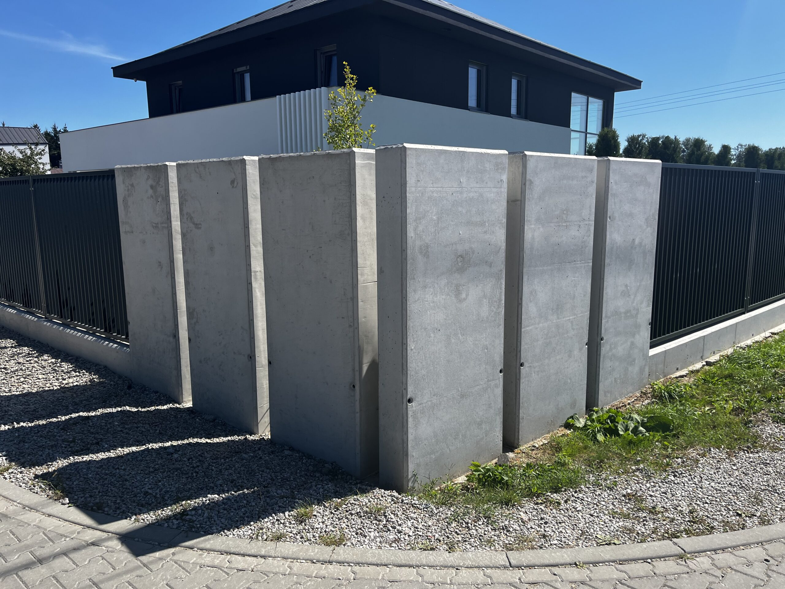
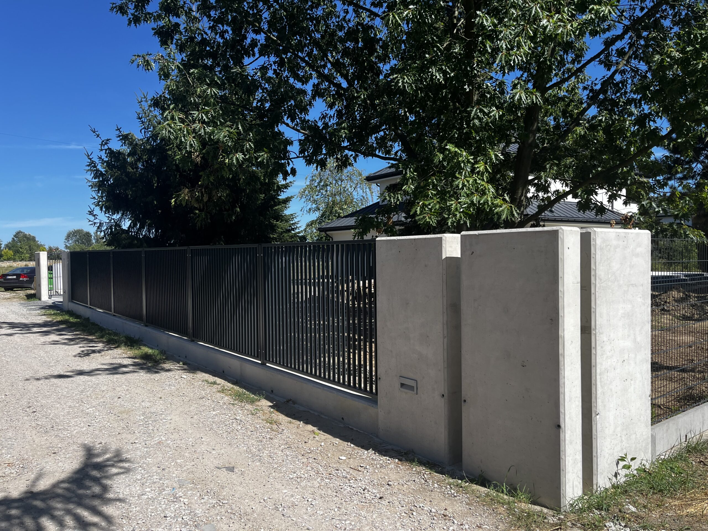
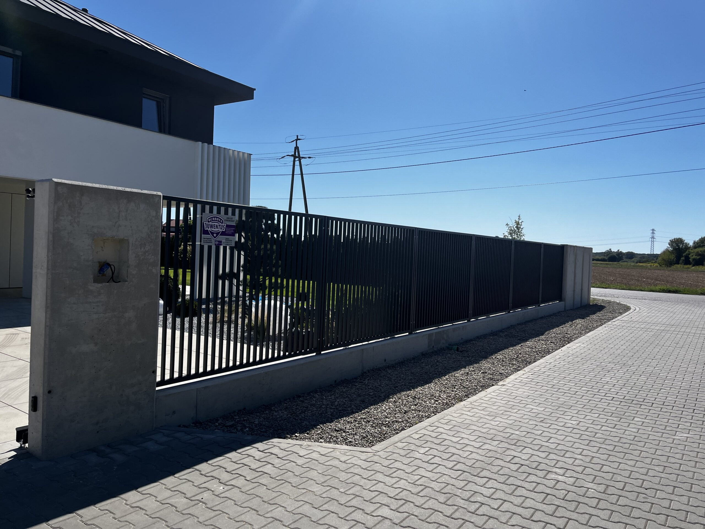

Ogrodzenia z Betonu Architektonicznego
Profesjonalne ogrodzenia dla Twojej posesji
Nasze Ogrodzenia
Specjalizujemy się w projektowaniu i montażu ogrodzeń z betonu architektonicznego, które łączą w sobie elegancję, trwałość i bezpieczeństwo. Nasze ogrodzenia są idealnym rozwiązaniem dla osób, które cenią sobie estetykę i funkcjonalność.
Beton architektoniczny to materiał o wyjątkowych właściwościach - jest niezwykle trwały, odporny na warunki atmosferyczne i wymaga minimalnej konserwacji. Dzięki temu Twoje ogrodzenie będzie służyć przez wiele lat, zachowując swój pierwotny wygląd.
Maksymalne bezpieczeństwo
Różnorodne wzory i kolory
Długowieczność i trwałość


